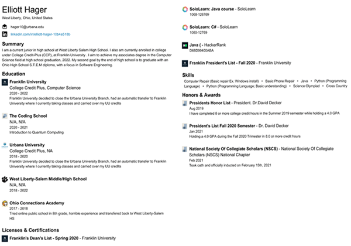

Career
Resume
The image will take you to a PDF of the resume that can be looked at in closer detail and printed
(Image taken from my LinkedIn generated resume and edited by me, 3/22/2022)
College Applications
I currently have applied to several colleges, the following is a list of all the colleges I have applied to or going to apply to.
- Massachusetts Institute of Technology (MIT)
- Iowa State University
- Purdue University
- The University of Southern California
- Hofstra University
- Penn State University
- Bellarmine University
- The Milwaukee School of Engineering
- Stevens Institute of Technology
- Albion College
- Trine University
- Texas A&M
- Penn State - Accepted (Scranton Campus for Software Engineering)
- Bellarmine University - Accepted (Bachelors of Arts in Computer Science)
- Massachusetts Institute of Technology (MIT) - Denied
- Iowa State University - Accepted (Bachelors in Software Engineering)
- The Milwaukee School of Engineering - Denied
- Texas A&M - Deferred to a partner college but computer science majors are not eligible
Learning/Education Plan
I am aiming to earn my associates of science in computer science at Franklin University by graduation (Degree Details). From there, I plan to attend a four-year institution. My top two college choices are the Massachusetts Institute of Technology (MIT) and Iowa State University (ISU). My major would be software engineering, but I am willing to go for a bachelor's and/or a master's in computer science focusing on software engineering. I have had the same career idea since I was in second or third grade So you can say I am strong-willed and making it happen.
Jobs
The Design Scribe
Over the 2021 summer, I held a job at a small, local business called The Design Scribe. The business had been run out of the owner's home for seven years before getting a storefront in West Liberty. The business did web design sold office supplies, printing, and graphic design. My employment was from May of 2021 to August of the same year. I was let go due to finical issues, but I am glad to work there. During my time at the job, I improved my people skills, communication, and teamwork with project deadlines.During the period of employment, however, I did get put on two web design commissions. The commissions were not massive, but I got to work with Divi Builder and WordPress to update information for business in the hospitality industry.
Plans During & After College
During college, I want to intern at Pixar as part of their central software engineering team. I have enjoyed
their animated films and want to help out behind the scenes.
If there is a position open and I feel that my skills would benefit the team, I would apply for a full-time position.
Otherwise, I would look at a position with companies like Google, Apple, Microsoft, or other companies I am
familiar with and use their software.